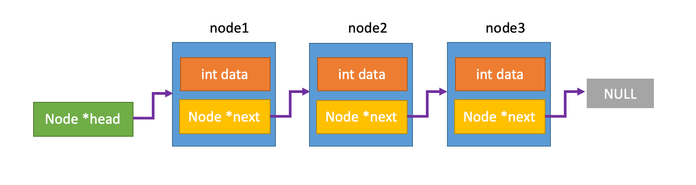

Lab 1: C & CGDB
Deadline: Monday, January 31, 11:59:59 PM PT
The lab provides both video-based and text-based guidance to cater to how you learn best. The same material is presented in both the video-based and text-based option. You may choose whichever version works best for you or choose to use both sets of resources. There is an FAQ section at the bottom of the lab page. You will find FAQs throughout the lab that are linked to the bottom on the page.
Setup
You must complete this lab on the hive machines. See Lab 0 for a refresher on using them.
In your labs directory, pull the files for this lab with:
If you get an error like the following:
fatal: 'starter' does not appear to be a git repository
fatal: Could not read from remote repository.
make sure to set the starter remote as follows:
and run the original command again.
Learning Goals
- Practice with pointers, strings, and structs
- Learn basic debugging skills: compiler warnings, assert statements, and GDB
Exercise 1: Warm Up
Learning Goals
- Practice the C programming concepts you have learned in lecture: strings, structs, and pointers
- Introduction to
assert()
Compiling and Running a C Program
In this lab, we will be using the command line program gcc to compile programs in C. Use the following command to compile the code for Part 1
This compiles ex1.c and test_ex1.c into an executable file named a.out. If you've taken
CS61B or have experience with Java, you can kinda think of gcc as the C equivalent
of javac. This file can be run with the following command:
The executable file is a.out, so what is the ./ for? Answer: when
you want to execute an executable, you need to prepend the path to the name of the executable.
The dot refers to the "current directory." Double dots (..) would refer to the directory one
level up.
gcc has various command line options which you are encouraged to
explore. In this lab, however, we will only be using -o, which is used to specify
the name of the executable file that gcc creates. By default, the name of the executable generated by gcc is a.out. You can use the following
commands to compile ex1.c into a program named ex1, and then run it.
This is helpful if you don't want all of your executable files to be named a.out.
Part 1
-
Implement the function
num_occurrencesinexercise1/ex1.c. The directions for completing the function can be found in the comments above the function.test_ex1.cwill be used to test your code.What is
The Linux man pages serve as a manual for various standard library and operating system features. You can access the man pages through your terminal.assert?Type the following line into your terminal to learn about assert
To exit the man pages, press q.
Also see: FAQ: What is a macro?
-
Think of a scenario that is not tested by the current test cases. Create one additional test case to test this scenario.
Part 2
- Implement the function
compute_nucleotide_occurrencesinex1.c. Look atex1.hto see relevant struct definitions.Hint
You may be able to reuse `num_occurrences` - Think of a scenario that is not tested by the current test cases. Create one additional test case to test this scenario.
Exercise 2
Learning Goals
- Get familiar with basic GDB commands
Part 1: Compiler Warnings
-
Read over the code in
exercise2/pwd_checker.c. -
Learn about compiler warnings and the importance of resolving them. This section will resolve bug(s) along the way. Make sure to fix the bug(s) before moving on to the next section.
Click here to watch the companion video
-
Compiler warnings are generated to help you find potential bugs in your code. Make sure that you fix all of your compiler warnings before you attempt to run your code. This will save you a lot of time debugging in the future because fixing the compiler warnings is much faster than trying to find the bug on your own.
-
Compile your code
The -o flag names your executable
pwd_checker. -
You should see 4 warnings. When you read the warning, you can see that the first warning is in the function
check_upper. The warning states that we are doing a comparison between a pointer and a zero character constant and prints out the line where the warning occurs. -
The next line gives us a suggestion for how to fix our warning. The compiler will not always give us a suggestion for how to fix warnings. When it does give us a suggestion, it might not be accurate, but it is a good place to start.
-
Take a look at the code where the warning is occurring. It is trying to compare a
const char *to achar. The compiler has pointed this out as a potential error because we should not be performing a comparison between a pointer and a character type. -
This line of code is trying to check if the current character in the password is the null terminator. The code is currently comparing the pointer-to-the-character and the null terminator. We need to compare the pointed-to-character with the null terminator. To do this, we need to dereference the pointer. Change the line to this:
while -
Recompile your code. You can now see that this warning does not appear and there are three warnings left.
-
-
Fix the remaining compiler warnings in
pwd_checker.c
Part 2: Assert Statements
-
Learn about how you can use assert statements to debug your code. Edit the code in
pwd_checkeraccording to the directions in this section.Click here to watch the companion video
-
Compile and run your code
-
The program says that
qrtv?,mp!ltrA0b13rab4hamis not a valid password for Abraham Garcia. However, we can see that this password fits all of the requirements. It looks like there is a bug in our code. -
The function
check_passwordmakes several function calls to verify that the password meets each of the requirements. To find the location of our bug, we can use assert statements to figure out which function is not returning the expected value. For example, you can add the following line after the function call tocheck_lowerto verify that the function returns the correct value. We expectcheck_lowerto returntruebecause the password contains a lower case letter.
-
-
Add the remaining assert statements after each function call in the function
check_password. This will help you determine which functions are not working as expected. -
Compile your code.
-
Oh no! We just created a new compiler warning! Learn how to fix this warning using the man pages
Click here to watch the companion video
-
The warning states that we have an implicit declaration of the function
assert. This means that we do not have a definition forassert. This often means that you have forgotten to include a header file or that we spelled something wrong. The only thing that we have added since the last time our code was compiling without warnings isassertstatements. This must mean that we need to include the definition of the functionassert.assertis a library macro, so we can use the man pages to figure out which header file we need to include. Type the following into your terminal to pull up the man pages -
The synopsis section tells us which header file to include. We can see that in order to use
assertwe need to includeassert.h -
Add the following line to the top of
pwd_checker.cNote that it is best practice to put your include statements in alphabetical order to make it easier for someone else reading your code to see which header files you have included. System header files should come before your own header files.
-
Compile your code. There should be no warnings.
-
Run your code. We can see that the assertion
lengthfailed. Look back at the functioncheck_password. It looks like the functioncheck_loweris working properly becauseassert(length)comes afterassert(lower). This failed assertion is telling us thatcheck_lengthis not working properly for this test case. We will investigate this in Part 3.
-
Part 3: Intro to GDB: start, step, next, finish, print, quit
What is GDB?
Here is an excerpt from the GDB website:
GDB, the GNU Project debugger, allows you to see what is going on 'inside' another program while it executes -- or what another program was doing at the moment it crashed.
GDB can do four main kinds of things (plus other things in support of these) to help you catch bugs in the act:
- Start your program, specifying anything that might affect its behavior.
- Make your program stop on specified conditions.
- Examine what has happened, when your program has stopped.
- Change things in your program, so you can experiment with correcting the effects of one bug and go on to learn about another.
In this class, we will be using CGDB which provides a lightweight interface to gdb to make it easier to use. CGDB is already installed on the hive machines, so there is no installation required. The remainder of the document uses CGDB and GDB interchangeably.
Here's a GDB reference card.
If you run into any issues with GDB, see the Common GDB Errors section below
-
In this section, you will learn the GDB commands
start,step,next,finish,print, andquit. This section will resolve bug(s) along the way. Make sure to fix the bug(s) in the code before moving on.Click here to watch the companion video (Please note that at the end of this video, there is an error in
check_name. We have removed this error to shorten the lab.)-
Before we can run our code through GDB, we need to include some additional debugging information in the executable. To do this, you will compile your code with the -g flag
-
To start CGDB, run the following command. Note that you should be using the executable (
pwd_checker) as the argument, not the source file (pwd_checker.c) -
You should now see CGDB open. The top window displays our code and the bottom window displays the console
-
Start running your program at the first line in main by typing the following command into the console. This will set a breakpoint at line 1 and begin running the program.
start -
The first line in main is a call to
printf. We do not want to step into this function. To step over it, you can use the following command:nextor
n -
Step into
check_password.stepor
s -
Step into
check_lower. -
We have already seen that
check_lowerbehaves properly with the given test case, so there is nothing that we need to look at here. To get out of this function, type the following command into the consolefinishAlternatively, you could have stepped until you reached the end of the function and it would have returned.
-
Step to the next line. We do not want to step into the
assertfunction call because this is a library function, so we know that our error isn't going to be in there. Step over this line. -
Step into
check_length. -
Step over
strlenbecause this is a library function. -
Step to the last line of the function.
-
Let's print out the return value
print meets_len_reqor
p meets_len_req -
Hmmm... it's
false. That's odd. Let's print outlength. -
The value of
lengthlooks correct, so there must be some logic error on line 24 -
Ahah, the code is checking if
lengthis less than or equal to 10, not greater than or equal. Update this line tobool meets_len_req = ; -
Let's run our code to see if this works. First, we need to quit out of gdb which you can do with the following commands
quitor
q -
GDB will ask you to make sure that you want to quit. Type
y -
Compile and run your code.
-
Yay, it worked!
-
-
check_numberis now failing, we will address this in the next part.
Part 4: Intro to GDB: break, conditional break, run, continue
-
In this section, you will learn the gdb commands
break,conditional break,run, andcontinue. This section will resolve bug(s) along the way. Make sure to fix the bug(s) in the code before moving on.Click here to watch the companion video
-
Recompile and run your code. You should see that the assertion
numberis failing -
Start cgdb
-
Let's set a breakpoint in our code to jump straight to the the function
check_numberusing the following commandbreak pwd_checker.c:check_numberor
b pwd_checker.c:check_number -
Use the following command to beginning running the program
runor
rYour code should run until it gets to the breakpoint that we just set.
-
Step into
check_range. -
Recall that the numbers do not appear until later in the password. Instead of stepping through all of the non-numerical characters at the beginning of password, we can jump straight to the point in the code where the numbers are being compared using a conditional breakpoint. A conditional breakpoint will only stop the program based on a given condition. The first number in the password
1, so we can set the breakpoint whenletteris'1'. To set this breakpoint, enter the following lineb 31 if letter=='1'We are using the single quote because
1is a char. We did not need to specify the file name as we did last time, because we are already inpwd_checker.c. -
To continue executing your code after it stops at a breakpoint, use the following command
continueor
c -
The code has stopped at the conditional breakpoint. To verify this, print
letterp letterIt printed
49 '1'which is a decimal number followed by it's corresponding ASCII representation. If you look at an ASCII table, you can see that49is the decimal representation of the character1. -
Let's take a look at the return value of
check_range. Printis_in_range. -
The result is
false. That's strange.'1'should be in the range. -
Let's look at the upper and lower bounds of the range. Print
lowerandupper. -
Ahah! The ASCII representation of
loweris\000(the null terminator) and the ASCII representation ofupperis\t. It looks like we passed in the numbers0and9instead of the characters'0'and'9'! Let's fix thatif -
Quit cgdb and compile and run your code.
-
-
Debug
check_upperon your own using the commands you just learned. -
Once you have fixed the bug in
check_upperbe sure to remove the assert statements that you added in exercise 2, part 2 since these asserts were created to test only the first test case.
Exercise 3
Learning Goals
- See an application of double pointers
- Get more practice using gdb
- Learn how to find the location of segfaults using gdb
Part 1: Printing
In GDB, you can print out more than just simple variables. Here are some examples:
-
You can print out a member of a struct
p my_struct->my_member -
You can print out the result of a function
p strlen(my_string) -
You can print the dereferenced value of a pointer
p *my_pointer
Part 2: Double Pointers
-
When do we use double pointers?
Here is a scenario to help you understand when to use double pointers.
Let's say that we have the following struct:
typedef struct Node int data; struct Node *next; } Node;And the following linked list: 
-
We want to have a function called
update_integerthat will update the value of an integer. It's signature should look like:voidWhat should be the type of
int_to_update?Answer
int *We must use a pointer of to the integer in order to change the value of the original integer. If we just pass
int, we will only change the local copy of the integer, and the change will not be reflected outside of the function. -
How would we call
update_integerto update the data field of node1?Answer
update_integer(&(head->data))Just as before, we must pass in a pointer to the integer in order to change the value of the original integer.
-
We want to have a function called
update_headthat will update the head of a list. It's signature should look like:voidWhat should be the type of
head_to_update?Answer
Node **Just as before, whenever we want to update the value of a variable, we need to pass a pointer to it. In this scenario, the variable that we want to update is a pointer, so we need to pass a pointer to a pointer.
-
How would we call
update_headto ensure that head is updated properly?Answer
update_head(&head)Again, we need to pass the pointer to the head to ensure that the original head is being updated and not just the local copy.
-
-
Read over the function
add_to_frontinexercise3/linked_list.cto see an example of double pointers.
Part 3: How to find segfaults
In this section, we will be debugging the recursive implementation of reversing a linked list.
-
Read over the code in
exercise3/linked_list.c. -
In this step, you will learn how to find segfaults using cgdb. This section will resolve bug(s) along the way. Make sure to fix the bug(s) in the code before moving on.
Click here to watch the companion video
-
Compile and run your code.
-
We can see that there is a segfault, but we do not know where it is occurring.
-
Let's open up the code in cgdb (make sure that you compiled it with the
-gflag). -
Recall the
runcommand will run your code until something stops it (like a segfault or a breakpoint). Execute theruncommand. -
The command window shows us that the the program encountered a segfault ("Program received signal SIGSEGV") at line 62. Now we know the line where the segfault occurred.
-
Another command that can be useful when you are debugging segfaults is
backtrace. This will allow you to see the call stack at the time of the crash. Execute the following command to see the call stackbacktraceor
bt
In this case, we can see that
reverse_listwas called frommain. We already knew this, sobacktracewas not helpful in this case, but it can be helpful in the future if you have longer call stacks.-
Let's examine the state of the program when the segfault occurred by printing some variables. Print out
head. -
Remember that
headis a double pointer, so we expect to see an address when we print it out.headlooks fine. Let's print out the dereferenced head (*head). -
It looks like
*headisNULL. If you look at the line of code that the program is segfaulting on, you can see that we are trying to access(*head)->next. We know that trying to access a member of aNULLstruct will result in a segfault, so this is our problem. -
What does it mean for
*headto be NULL? It means that the list is empty. How do we reverse an empty list? The reverse of an empty list is just an empty list, so we do not need to modify the list. At the top of the function, we can add a check to see if the list if empty and return if so. Modify the first line of the function to be the following:if -
Compile and run your code. It should pass the reverse list tests now.
-
Exercise 4 (Optional)
Here's one to help you in your interviews. In ll_cycle.c, complete the function
ll_has_cycle() to implement the following algorithm for checking if a singly-
linked list has a cycle.
- Start with two pointers at the head of the list. One will be called fast_ptr and the other will be called slow_ptr.
- Advance fast_ptr by two nodes. If this is not possible because of a null pointer, we have found the end of the list, and therefore the list is acyclic.
- Advance slow_ptr by one node. (A null pointer check is unnecessary. Why?)
- If the fast_ptr and slow_ptr ever point to the same node, the list is cyclic. Otherwise, go back to step 2.
If you want to see the definition of the node struct, open ll_cycle.h (FAQ: What is a header file?)
Action Item
Implement ll_has_cycle(). Once you've done so, you can execute the following
commands to run the tests for your code. If you make any changes, make sure
to run ALL of the following commands again, in order.
Here's a Wikipedia article on the algorithm and why it works. Don't worry about it if you don't completely understand it. We won't test you on this.
Exercise 5
Please complete this feedback survey. The survey will collect your email so that we can record whether you completed it, but we will anonymize the data before we analyze it. Thanks for taking the time to fill it out!
Submission
Save, commit, and push your work, then submit to the Lab 1 assignment on Gradescope. If you have a partner, you should submit the assignment together by adding your partner to your Gradescope submission.
Other Useful GDB Commands (Recommended)
Command: info locals
Prints the value of all of the local variables in the current stack frame
Command: command
Executes a list of commands every time a break point is reached. For example:
Set a breakpoint:
b 73
Type commands followed by the breakpoint number:
commands 1
Type the list of commands that you want to execute separated by a new line. After your list of commands, type end and hit Enter.
p var1
p var2
end
Command: delete
Deletes the specified breakpoint. See the reference card for more info.
FAQ
What is a null terminator?
A null terminator is a character used to denote the end of a string in C. The null terminator is written as '\0'. The ASCII value of the null terminator is 0. When you make a character array, you should terminate the array with a null terminator like this
char my_str = ;
If you are using double quotes to create a string, the null terminator is implicitly added, so you should not add it yourself. For example:
char *my_str = "example";
What is an executable?
An executable is a file composed of binary that can be executed on your computer. Executables are created by compiling source code.
What is strlen?
See the man pages for a full description. Type the following into your terminal
To exit the man pages, press q.
What is a macro?
A macro is a chunk of text that has a name. Whenever this name appears in code, the preprocessor replaces the name with the text. Macros are indicated with #define For example:
int
In this code, the preprocessor will replace ARR_SIZE with 1024, and it will replace
arr3 = ;
with
arr3 = ;
Macros can be much more complex than the example above. You can find more information in the GCC docs
What is a segfault?
A segfault occurs when you try to access a piece of memory that "does not belong to you." There are several things that can cause a segfault including
- Accessing an array out of bounds. Note that accessing an array out of bounds will not always lead to a segfault. The index at which a segfault will occur is somewhat unpredictable.
- Derefrencing a null pointer.
- Accessing a pointer that has been
free'd (freeis not in the scope of this lab). - Attempting to write to read-only memory. For example, strings created with the following syntax are read only. This means that you cannot alter the value of the string after you have created it. In other words, it is immutable.
char *my_str = "Hello";
However, a string created using the following syntax is mutable.
char my_str = "hello";
Why is the first string immutable while the second string is mutable? The first string is stored in the data portion of memory which is read-only while the second string is stored on the stack.
What is a header file?
Header files allow you to share functions and macros across different source files. For more info, see the GCC header docs.
Common GDB Errors
GDB is skipping over lines of code
This could mean that your source file is more recent than your executable. Exit GDB, recompile your code with the -g flag, and restart gdb.
GDB isn't loading my file
You might see an error like this "not in executable format: file format not recognized" or "No symbol table loaded. Use the "file" command."
This means that you called gdb on the source file (the one ending in .c) instead of the executable. Exit GDB and make sure that you call it with the executable.
How do I switch between the code window and the console?
CGDB presents a vim-like navigation interface: Press i on your keyboard to switch from the code window to the console. Press Esc to switch from the console to the code window.
GDB presents a readline/emacs-like navigation interface: Press Ctrl + X then O to switch between windows.
I'm stuck in the code window
Press i on your keyboard. This should get you back to the console.
The text UI is garbled
Refresh the GDB text UI by pressing Ctrl + l.